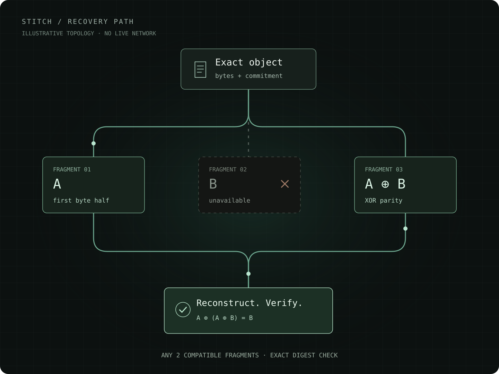

01 / Identity follows the bytes
Full commitments bind the object, encoding and each fragment. A convenient filename never substitutes for identity.
A fabric for changing peers
Stitch splits objects into verifiable fragments and replays pure computation from checked checkpoints. Explore what can survive a missing peer, and what evidence recovery actually needs.
Open source · Browser-native experiment · Local example first

Full commitments bind the object, encoding and each fragment. A convenient filename never substitutes for identity.
Any two compatible, checked XOR fragments can reconstruct the object. Enough information must still be reachable.
Pure jobs carry their program and input. Stitch replays a checkpoint before continuing its computation.
01 / Learn by changing the inputs
Encode your own short message. Withhold a fragment, then change a byte. The same verifier used by Stitch checks the result in this browser.
The object uses Stitch's versioned, domain-separated SHA-256 commitment. Fragment bytes are shown in hex, truncated after 16 bytes. A and B are equal-size byte halves; odd-length objects add padding to B. Parity is their bytewise XOR. Recovery removes padding and checks the original object digest.
This local result establishes checked reconstruction for these supplied bytes. It says nothing about remote retention, trusted peer identity or independent machines. Read the exact wire contract ↗
Local experiment, real byte checks. These controls do not join a mesh, send your text, change live objects or consume the console's network allowance. Withholding a fragment models unavailable information; it does not disconnect a real peer. The live console below has separate network consent.
02 / Five layers, explicit boundaries
Each layer has a different job. Keeping those jobs separate makes the guarantees, assumptions and failure states easier to inspect.
Commit to exact bytes, interpret ring operations and check signed pointer succession.
Integrity is not availability. A valid signature still needs an independently trusted writer.
Propose refreshes and reserve bounded resources before effects.
An unknown outcome remains charged. The survival heuristic is experimental.
Encode fragments, collect checked receipts and repair selected placements.
Sending is not storing. Recovery depends on enough compatible fragments remaining reachable.
Validate deterministic checkpoints against the identified program and input before resuming.
Partitions may duplicate pure work. Linux VM effects have a separate host contract.
Use WebRTC for peer transfers, DNS for discovery and an optional public relay.
DNS is not consensus. This browser does not store data inside routers or speak BGP.
03 / Inspect the product model
Browse the product facets, declared relationships and their evidence boundaries. Catalog coverage is an inventory, not a verification result.
Loading the source-derived facet inventory…
04 / Read the evidence carefully
Verification applies to the exact inputs recorded in each report. A source record, local demo or passing browser scenario does not by itself establish native Prism artifact acceptance or a production qualification.
05 / Operate the real implementation
Start a local object or pure job, or explicitly join a mesh to exchange data. Network signaling and public object relay have separate consent controls. Advanced actions retain their modeled guards, resource limits and evidence labels.
Available next actions:
Scheduler estimates, not availability evidence: Scheduler λ̂: 0.017/s | P(alive): 1.000 | H(p): 0.000 bit |
These are configurable operating allowances, not semantic limits. An expired epoch or exhausted allowance refuses further effects. Choose a new epoch to continue; previous charges are retained, including failed or uncertain effects. Existing objects, jobs and pointer heads stay in this tab.
Transfer allowances include reserved relay/DNS response ceilings. Cache allowances count new allocations in each epoch, not total browser memory. TLS, ICE/STUN, VM work and host overhead are outside this accounting. History is kept in this tab until exported. Renewal does not retry failed effects; use the relevant sync or resume control.
After peers join or change, select exact retained bytes and repair. Missing or expired fragments need fresh receipts. Optional replacement keeps the old holder until the new receipt commits, then requests exact release. A timeout never proves deletion.
No retained verified object selected.
Text is encoded as UTF-8, at most 128 KiB. The label is a convenience alias, not identity. New objects are shared with the guest only when guest object sharing is enabled.
| Object commitment (SHA-256) | Label (/mnt) | Size | Verified | Source | Payload Preview |
|---|---|---|---|---|---|
| No local object bytes. | |||||
Keep a separate backup before clearing RAM. Import checks objects and pure jobs in a local recovery vault, without sending packets, mounting files or retrying writes. Closing this tab loses the vault. Signing keys and pending-write journals are not included.
Select 1–32 live entries. Use Ctrl/Command to toggle individual choices or Shift for a range. Reopening refreshes available evidence and retains still-available selections. Imported evidence stays in the separate recovery vault and is not added to live objects or jobs.
At most 32 entries, each object up to the live 128 KiB limit. Default wire allowance includes hex fragments and job overhead. Limits bound this operation, not total browser memory; replay is pure computation, not VM execution.
Signatures inside a file do not establish trust or freshness. Independently obtain the exact recent pointer digest and writer key. First accept the exact recent anchor here. Then, in “Pin, discover and publish pointers”, independently pin the same query name and writer key. Return here to restore the accepted anchor into that live observer. Import and acceptance alone never change a live head.
Restore only an empty observer or the exact already-retained head. A different live head is never overwritten, even by a newer accepted anchor. This session-only action enables ordinary next-revision admission, not publication, key rotation or proof of global freshness.
No recovery file imported.
This demonstration constructs a deterministic W64 ring program. Choose 3–60 steps and a 100–3000 ms delay. Pure replay is separate from guest shell execution.
| Job ID | Progress | Owner Node | Current W64 Ring Value | Status | Execution evidence |
|---|---|---|---|---|---|
| No pure jobs observed. Use the current journey to start or inspect checkpoint recovery. | |||||
The whole VM stops when its elapsed-time allowance expires, when Cancel is requested after dispatch, or when a filesystem/result limit is exceeded. This includes background commands and console work. Browser scheduling can delay stopping; this is not an instruction-accurate CPU quota. Destroy the instance before changing its allowance.
Guest RAM: 64 MiB. Local 9p /mnt: 16 MiB per buffer, 64 MiB cumulative allocation requests, and 4096 inode/link admissions per instance. Removing files does not refund that allowance. Result reads: 4 MiB per command, 16 MiB retained in total. Other guest filesystems consume configured guest memory; these controls are not a complete host-memory or guest-isolation guarantee.
No guest resource usage observed.
Leave blank for offline shell and object work. For Ethernet sharing, choose a different address for every guest on the mesh and compatible subnet prefixes. The example is not an allocation. Display names do not assign addresses. No DHCP, duplicate-address detection, gateway or DNS setup is provided. /31 is for point-to-point links; /32 needs explicit guest routes. Destroy a retained instance before changing configuration.
No static address configured.
Commands run in the guest, not on this host. Stdout and stderr are captured as bytes and shown as text below, including when storing the object fails. After dispatch, Cancel requests a stop of the whole VM, including other guest work. Public relay consent also applies to stored command output.
No guest command submitted.
Cancelling before dispatch prevents the command. After dispatch, cancellation stops the whole VM and leaves prior effects unknown. A short observation timeout keeps the guest running until cancellation or the runtime limit. Unknown commands are never automatically replayed. Stop and destroy revoke grants; failures retain the instance for destroy retry. These controls do not certify guest isolation.
No guest output observed.
No guest output observed.
The console below is the emulator display. Shell commands and their captured text above do not require interacting with its canvas. Graphics-only guest applications may have no text equivalent.
The DNS name, writer key and Zone ID select an exact publication scope. Changing any of them selects another scope; it does not resolve earlier unknown writes. After reload, pin the original writer, enter its exact name and zone, then load saved publication before reconciling. Reconciliation also needs a scoped token.
Use a token with DNS Edit restricted to this exact zone. It is sent only to the Cloudflare API when you publish or reconcile; it is not saved or exported. Replace it here when expired or revoked. A provider acknowledgement is not DNS propagation.
Paste complete signed JSON, at most 4096 UTF-8 bytes. Admission checks this exact name, independently pinned key and retained head. Restoring an anchor in the recovery vault does not change this observer.